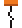
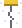
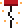
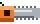
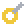
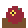
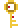
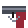

Pochita Doll
Summons Pochita to follow you around as a flying pet. Woof!
Every craftable item in the mod, grouped by what it's for. "Iron/Lead Bar" means either bar works.
| Item | Recipe | Crafted at | Also dropped by |
|---|---|---|---|
| Pochita's Heart | Life Crystal, 5 Chain, Shackle | Demon/Crimson Altar | Zombie Devil (25%) |
 Starter Cord | 10 Rope, 3 Iron/Lead Bar | Anvil | |
 Revved Starter Cord | Starter Cord, 10 Hallowed Bar, 5 Soul of Might, 5 Soul of Fright, 5 Soul of Sight | Mythril/Orichalcum Anvil | Bat Devil (25%) |
 Hero of Hell's Cord | Revved Starter Cord, 10 Luminite Bar, 15 Solar Fragment | Ancient Manipulator | Makima (33%) |
 Chainsaw Arm | 12 Iron/Lead Bar, 10 Chain | Anvil | Zombie Devil (33%) |
| Item | Form | Recipe | Crafted at |
|---|---|---|---|
 Grenade Pin | Reze | 15 Devil Flesh, 10 Grenades | Anvil |
| Katana Devil's Heart | Katana Man | 15 Devil Flesh, 12 Iron/Lead Bar, 5 Silk | Anvil |
| Bow Devil's Heart | Quanxi | 15 Devil Flesh, 100 Wooden Arrows, 5 Iron/Lead Bar | Anvil |
| Flamethrower Devil's Heart | Barem Bridge | 15 Devil Flesh, 10 Hellstone | Anvil |
| Sword Devil's Heart | Miri Sugo | 15 Devil Flesh, 15 Iron/Lead Bar | Anvil |
| Spear Devil's Heart | Spear Hybrid | 15 Devil Flesh, 10 Iron/Lead Bar, 20 Wood | Anvil |
| Whip Devil's Heart | Whip Hybrid | 15 Devil Flesh, 10 Chain, 5 Leather | Anvil |
| Item | Summons | Recipe | Crafted at | Use only |
|---|---|---|---|---|
 Rotting Offering | Zombie Devil | 8 Devil Flesh | Demon/Crimson Altar | Any time |
| Bloody Bat Fang | Bat Devil | 15 Devil Flesh, 5 Soul of Night | Mythril/Orichalcum Anvil | Hardmode |
 Cursed Hotel Key | Eternity Devil | 20 Devil Flesh, 8 Soul of Night, Golden Key | Mythril/Orichalcum Anvil | Hardmode |
 Gun Devil's Trigger | Gun Devil | 15 Gun Devil Fragment, 10 Devil Flesh | Mythril/Orichalcum Anvil | After Plantera |
| Makima's Contract | Makima | 10 Luminite Bar, 10 Gun Devil Fragment, 20 Devil Flesh | Ancient Manipulator | After the Moon Lord |
| Material | Where to get it | Used for |
|---|---|---|
| Devil Flesh | Dropped by every devil. Zombie Devil Minions on the surface at night are the earliest source. | All hybrid transform items and all boss summons |
| Gun Devil Fragment | Gun Devil Spawn (33%) on the Hardmode surface, and the Gun Devil | Gun Devil's Trigger, Makima's Contract |
Summons Pochita to follow you around as a flying pet. Woof!